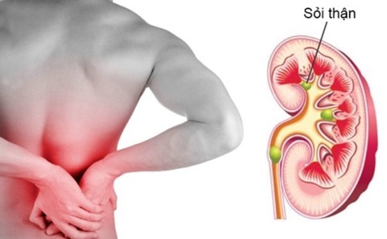
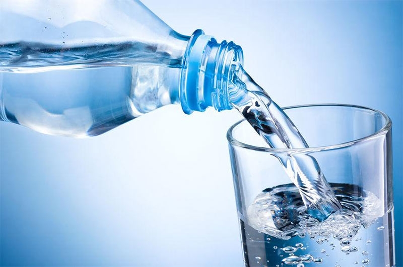

AQUABAY Doanh nghiệp văn hóa tiêu biểu thời kỳ hội nhập năm 2024
25-06-2024Cơ thể thiếu nước kéo dài có thể mắc một số bệnh mạn tính
Hầu hết mọi người đều biết nước rất quan trọng để bảo vệ sức khỏe. Tuy nhiên, ít người biết rằng thiếu nước trong thời gian dài sẽ ảnh hưởng đến tất cả cơ quan, mô và tế bào của cơ thể.
Theo chuyên trang y tế News Medical, Các nghiên cứu dịch tễ học hiện nay cho thấy ngay cả khi cơ thể thiếu nước nhẹ nhưng mạn tính cũng dẫn đến sự phát triển của tim mạch vành, suy tim, tiểu đường, béo phì, suy giảm chức năng thận và lão hóa sớm…
1. Cơ thể trở nên thích ứng với tình trạng thiếu nước
Tình trạng giữ nước được xác định bởi trạng thái cân bằng nước. Tình trạng thiếu nước dần dần khiến cơ thể phải tập thích ứng. Sự thích ứng này cũng đi kèm với việc điều chỉnh tim mạch.
Ngày càng nhiều nghiên cứu đã chứng minh cơ thể thiếu nước làm tăng nồng độ hoóc môn chống bài niệu arginine vasopressin trong huyết tương nhằm giảm mất nước qua bài tiết. Đồng thời, mức natri cũng tăng đến ngưỡng cao nhất cho phép, lượng nước tiểu giảm và độ thẩm thấu nước tiểu tăng, dẫn đến tăng nguy cơ phát triển các bệnh mạn tính mới khởi phát, dẫn tới lão hóa nhanh và tử vong sớm.
2. Cơ thể thiếu nước và nguy cơ mắc bệnh tim
Theo Trung tâm Y tế Baltimore Washington, Đại học Maryland (Mỹ), mất nước đồng nghĩa với việc tim phải làm việc nhiều hơn để bơm máu. Điều này có thể khiến tim bạn đập nhanh hơn, gây ra nhịp tim không đều hoặc thậm chí là đánh trống ngực. Ngoài ra, tình trạng mất nước khiến máu đặc hơn và làm co thành mạch máu. Điều này có thể gây ra huyết áp cao và gây căng thẳng cho tim.
3. Cơ thể thiếu nước và nguy cơ mắc bệnh thận

Theo News Medical, Khi cơ thể bạn thiếu nước trong thời gian dài, arginine vasopressin và hóc môn tiết angiotensin cũng sẽ kích thích cảm giác khát và thèm muối, giảm tiết mồ hôi. Từ đó có thể ảnh hưởng đến phản ứng điều nhiệt khi thời tiết nắng nóng và gây ra bệnh thận.
4. Cơ thể thiếu nước và nguy cơ mắc bệnh tiểu đường
Tiến sĩ Anna Simos, chuyên gia giáo dục và chăm sóc bệnh tiểu đường, Trung tâm Y tế Stanford Health Care (Mỹ), cho biết: Mất nước có mối liên hệ với bệnh tiểu đường. Nghiên cứu được theo dõi 9 năm cho thấy những người uống ít hơn nửa lít nước mỗi ngày có nguy cơ bị tăng lượng đường trong máu cao hơn những người uống hơn 1 lít nước, theo trang tin sức khỏe Everyday Health.
5. Nước ion kiềm xu hướng nước uống tốt bảo vệ sức khỏe
Nước uống có vai trò quan trọng đối với sức khỏe, hiện nay việc lựa chọn nước uống không còn là để giải khát mà còn là phương pháp bảo vệ sức khỏe mỗi ngày.
Nước ion kiềm có tính kiềm tự nhiên như rau xanh pH 8.5-9.5 giúp trung hòa axit dư thừa trong cơ thể, hỗ trợ tốt cho sức khỏe đặc biệt là hệ tiêu hóa.

Được sản xuất bằng công nghệ điện phân nên cụm phân tử nước ion kiềm sẽ nhỏ hơn nhiều lần so với nước uống thông thường khác, giúp nước nhanh chóng thẩm thấu tới mọi tế bào. Đồng thời, thúc đẩy quá trình trao đổi chất, tuần hoàn máu cũng như đào thải độc tố nhanh chóng thông qua hệ bài tiết và mồ hôi.
Nước ion kiềm còn giàu khoáng chất tự nhiên phong phú như Na, Ca, Mg, K… nếu sử dụng thường xuyên giúp sức khỏe dẻo dai, tăng cường sức đề kháng.
Đặc biệt, Hydro hoạt tính có trong nước ion kiềm có khả năng trung hòa các gốc tự do, giúp tế bào khỏe mạnh, làm chậm quá trình lão hóa, tăng sức đề kháng và duy trì vẻ đẹp.
Để khỏe mạnh và phòng chống các bệnh mạn tính bạn hãy uống đủ 2-3 lít nước mỗi ngày. Đặc biệt, hãy để AQUABAY đồng hành cùng sức khỏe gia đình